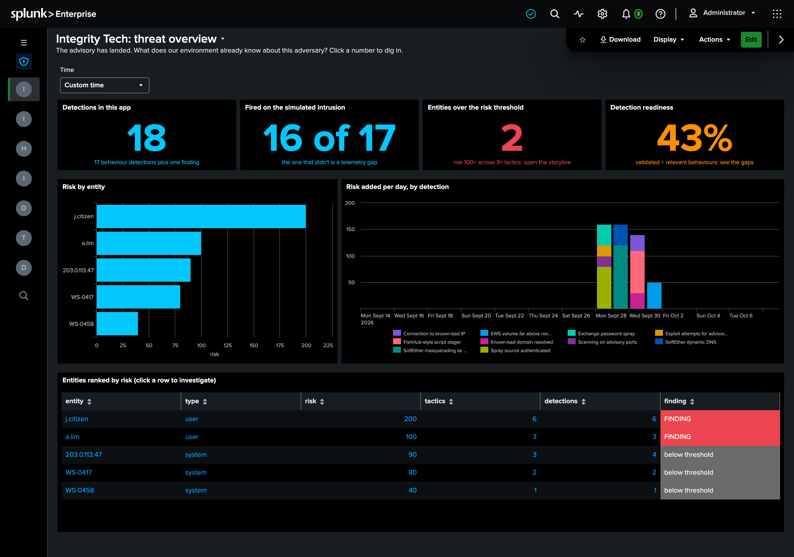
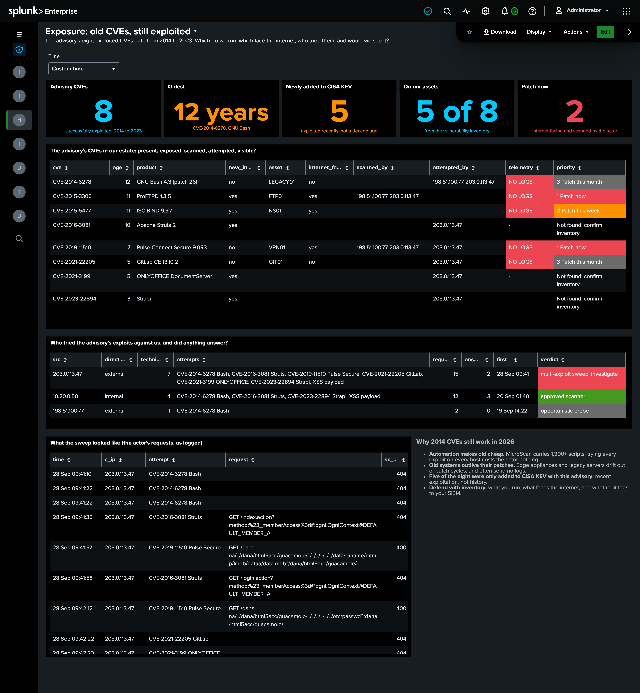
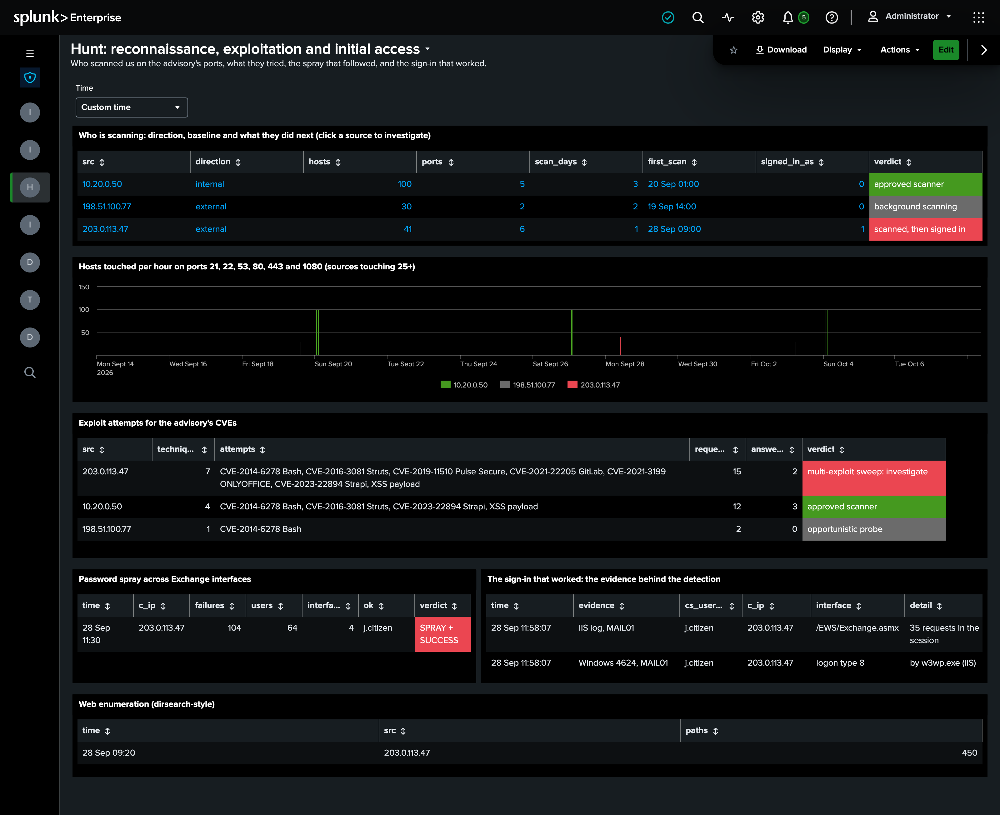
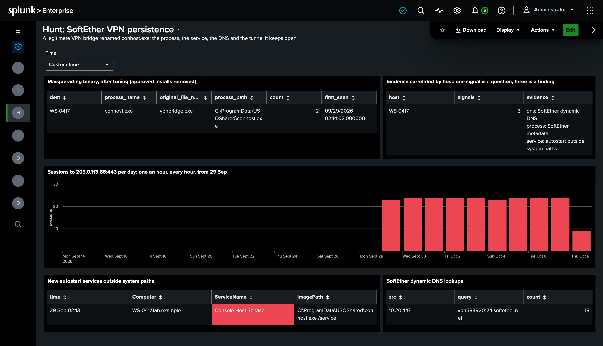
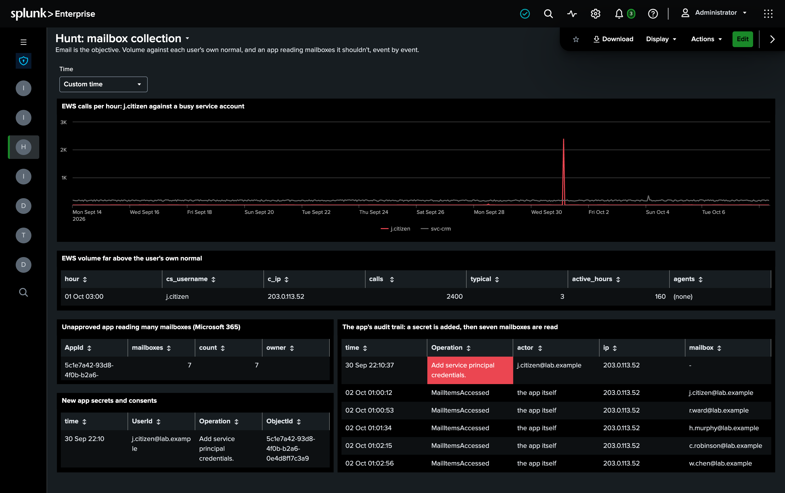
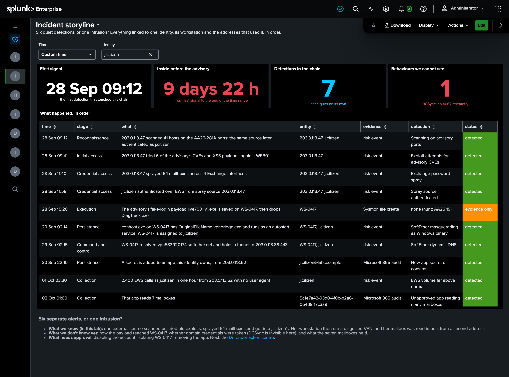
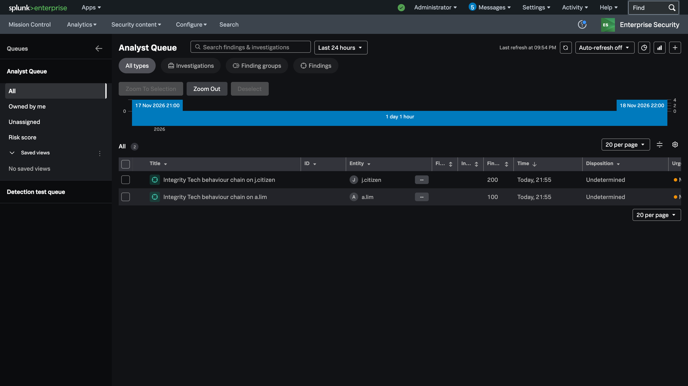
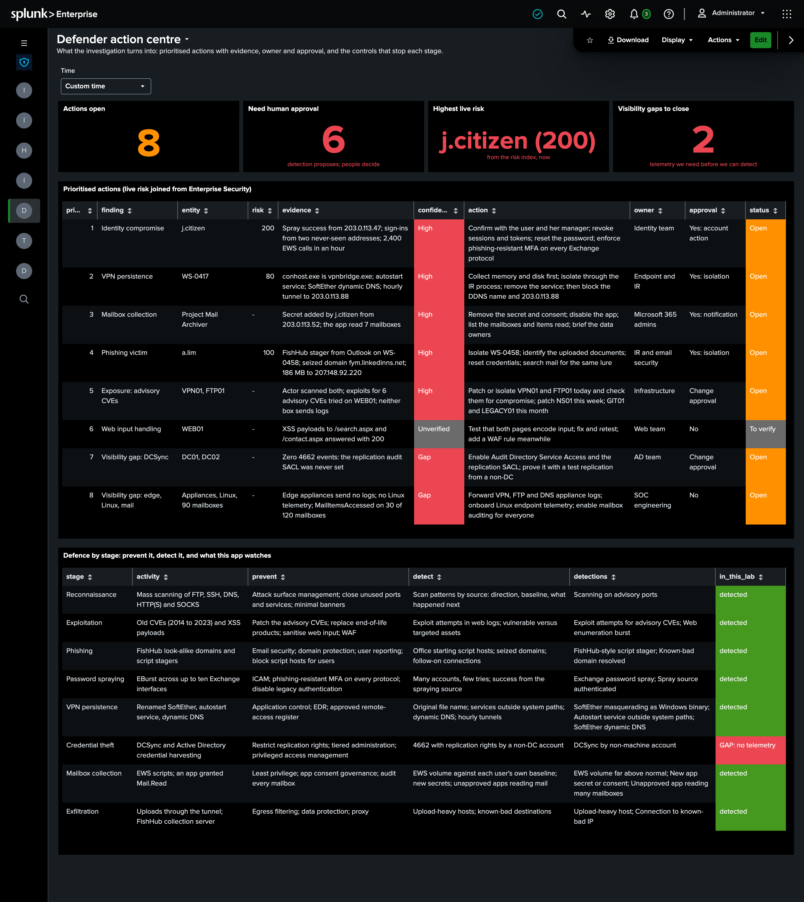
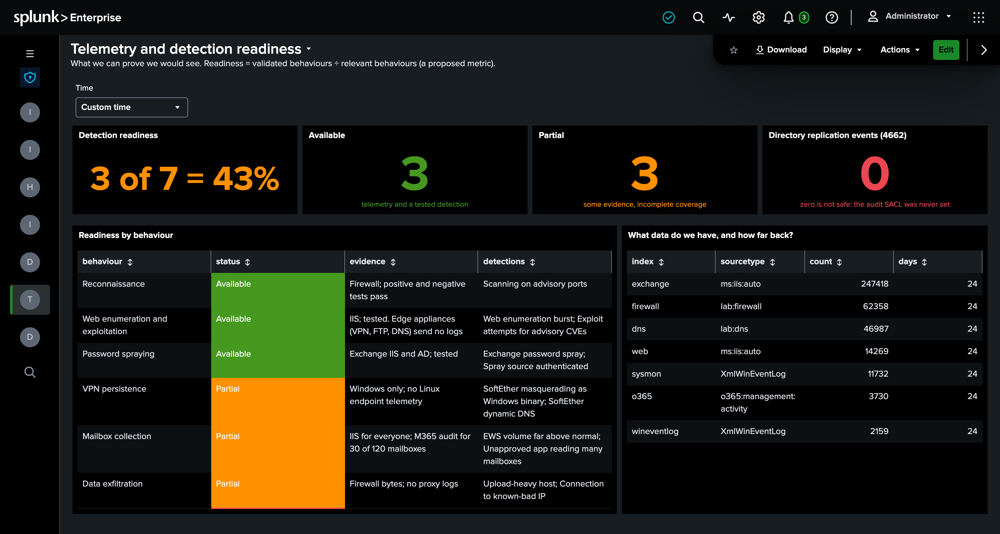

Could you answer all five today, with evidence?
Would you see the reconnaissance?
Would you detect the compromised identity?
Would you spot an unauthorised VPN?
Would you know your mailboxes were being extracted?
Could you prove which systems were exposed?
The session runs in three parts: concern (this adversary is real and patient), discovery (a step-by-step investigation of a simulated intrusion) and confidence (a method you can run against the next advisory).
AA26-281A: Integrity Tech, the outsourced plumbing of espionage
On 8 October 2026, ASD's ACSC, CISA, the FBI, the NSA and partners published AA26-281A about Chinese government-linked actors enabled by Integrity Technology Group. The same day, the FBI seized seven of its domains. The advisory describes a campaign, not a vulnerability: automated scanning, exploitation of old CVEs, password spraying, a VPN hidden on endpoints, theft of Active Directory credentials and bulk theft of email.
A contractor, not a crew
A for-profit, publicly identified company with Chinese government contracts. According to court filings it built the scanner, rented access, ran the phishing kit and collected the data. Tracked since 2021 as Flax Typhoon, Ethereal Panda and RedJuliett. Outsourcing blurs attribution, and disruption only removes one supplier.
MicroScan: reconnaissance at industrial scale
A Python web app with 1,300+ penetration-testing scripts, in use since 2017 and run from a Mirai-variant botnet. It knocks on FTP, SSH, DNS, HTTP(S) and SOCKS (ports 21, 22, 53, 80, 443, 1080) and hunts decade-old CVEs in common products.
FishHub: the phishing arm
Look-alike domains such as outlook3650.com, youtubecard.com and linkedinns.net. About 20 Taiwanese universities were confirmed victims, the DOJ says. The prize is not the click; it is the identity behind it.
Machines find the door; people walk through it. The first three steps are automated (hijack devices, scan everything, catalogue weak points). The last two are hands-on (get in, then stay and take). The hand-over is where detection gets easier: a scanner is noise, but a person has to sign in, install something and move data.
Attack mechanics (AA26-281A)
- Automation and exploitation: mass scanning for vulnerable internet-facing services, then exploitation of CVEs from 2014 to 2023, cross-site scripting (XSS) payloads and password spraying.
- Persistence and exfiltration: a renamed SoftEther VPN to blend into normal traffic; Active Directory credentials and email taken with native commands.
Key mitigations (AA26-281A)
- Surface reduction: disable unused remote access, ports and file-sharing services.
- Application hardening: sanitise input against XSS; patch known CVEs promptly.
- Identity protection: strict identity, credential and access management (ICAM) and mandatory multifactor authentication.
Legitimate tool, malicious behaviour
Almost all of the toolkit is dual-use: Nmap, Masscan, Dirsearch, SoftEther. You can't detect this adversary by its tools. You can't block SoftEther, but you can catch a VPN pretending to be conhost.exe.
Disrupted twice, still in business
The botnet was taken down in September 2024 (200,000+ devices, per the DOJ), the company was sanctioned by the US Treasury in January 2025, and seven domains were seized on 8 October 2026. Seizing a domain doesn't evict an actor who is already inside: a hidden VPN and stolen credentials don't need c0cc.cc.
The CVEs are old. Why does this matter now?
The eight vulnerabilities the advisory says were successfully exploited date from 2014 to 2023. Shellshock is twelve years old. That is the lesson, not a footnote.
| CVE | Product | Age in 2026 | Newly added to CISA KEV with this advisory |
|---|---|---|---|
| CVE-2014-6278 | GNU Bash (Shellshock) | 12 years | earlier |
| CVE-2015-3306 | ProFTPD | 11 years | yes |
| CVE-2015-5477 | ISC BIND | 11 years | yes |
| CVE-2016-3081 | Apache Struts 2 | 10 years | yes |
| CVE-2019-11510 | Pulse Connect Secure | 7 years | earlier |
| CVE-2021-22205 | GitLab CE | 5 years | earlier |
| CVE-2021-3199 | ONLYOFFICE | 5 years | yes |
| CVE-2023-22894 | Strapi | 3 years | yes |
1. Automation makes old cheap
MicroScan carries 1,300+ scripts. Trying every old exploit on every internet-facing host costs the actor nothing, so they keep trying.
2. Old systems outlive their patches
Edge appliances, FTP and DNS servers drift out of patch cycles, and they are often the boxes that send no logs at all.
3. Recent, not history
Five of the eight were only added to CISA's Known Exploited Vulnerabilities catalogue with this advisory: exploitation was confirmed recently, not a decade ago.
4. Some never reach a web log
A ProFTPD or BIND exploit hits the appliance, not IIS. A log search can't find it; only an inventory can.
Mission impact: what this adversary would cost
Operational disruption
Containment takes edge, identity and mail services offline. Operators lose the systems they plan with, at the worst time.
Intelligence exposure
Mail, plans and personnel data read quietly for weeks. The adversary knows what you know, and you don't know what they took.
Persistent access
A hidden VPN and valid credentials survive patching and domain seizures. They return when it suits them.
| Defence challenge | Why it matters | In AA26-281A |
|---|---|---|
| Large attack surface | Internet-facing and edge infrastructure can be overlooked | Actors target edge devices that are not closely monitored |
| Legacy infrastructure | Old vulnerabilities remain exploitable | The oldest exploited CVE dates from 2014 (Bash) |
| Identity compromise | Valid credentials make malicious activity look legitimate | Password spraying across up to ten Exchange interfaces |
| Long-term persistence | Access can be kept without obvious malware | A legitimate VPN, renamed, that survives reboots |
| Data exfiltration | Sensitive information leaves through legitimate services | Mail leaves through EWS and Microsoft 365 app secrets |
| Disconnected environments | Intelligence and detections must be operationalised locally | Indicators, detections and models must ship offline |
Impacts are the presenter's assessment for a Defence context. Plan for the consequence; don't assume the breach.
Intelligence isn't detection: write testable hypotheses
Take each behaviour from the advisory and write a hypothesis: if they did this here, what would we see, and in which log? Every hypothesis needs the evidence it expects, the telemetry that records it, and a test that proves it fires on a safe simulation and stays quiet on the legitimate look-alike.
| Adversary behaviour | Evidence we expect | Telemetry | Validated in the lab |
|---|---|---|---|
| Reconnaissance | One source touches many hosts on the advisory's ports in an hour | Firewall, NDR, flows | Fires; approved scanner silent |
| Web enumeration, exploits | 404 bursts; one source trying several advisory exploits | IIS, WAF, proxy | Fires; edge sends no logs |
| Password spraying | Many accounts fail a few times from one source, then one succeeds | Exchange IIS, AD, IdP | Fires on the sprayed account |
| VPN persistence | Windows-named binary with VPN metadata; autostart service; SoftEther DNS | Sysmon or EDR, 7045, DNS | Fires; approved install silent |
| Credential theft (DCSync) | Directory replication requested by a non-DC account | 4662 + replication SACL | Can't validate: no SACL |
| Mailbox collection | EWS volume far above the user's own normal; an unapproved app reading mail | Exchange IIS, M365 audit | Fires; 30 of 120 audited |
| Data exfiltration | A host uploads far more than it downloads | Firewall, proxy, EDR | Fires; no proxy logs |
Indicators
Known IPs, domains and hashes. Fast and precise, but they expire: by the presenter's count, 97% of the advisory's dated indicators were last seen before 2025.
Behaviour
What the attacker has to do: scan, spray, persist, collect. It survives a change of infrastructure. Use both; depend on neither alone. An indicator match is a lead to enrich, not proof.
8 October, 09:00. The advisory lands. Brief the commander by 16:00.
This is the guided walkthrough from the session, in eight steps. Every screen is from the Integrity Tech Detections app running on the synthetic data you can download above, so you can reproduce each one.

What does our environment already know?
- 16 of 17 detections fired on the simulated intrusion. The silent one is DCSync: a telemetry gap, not a pass.
- 2 entities over the threshold: j.citizen and a.lim. Who are they?
- 43% ready: 3 of 7 behaviours validated. Would you be comfortable telling your commander that?
Every number is a question.

Are we exposed to the advisory's CVEs, and would we even see an attack on them?
- 5 of the 8 CVEs are on our assets. VPN01 and FTP01 face the internet and were scanned by the actor: patch now.
- NO LOGS: every vulnerable appliance sends nothing to Splunk. That's unknown, not safe.
- One source tried 7 techniques against WEB01 in two minutes: six advisory CVEs plus XSS. Two XSS requests were answered.
Vulnerable, exposed, targeted, exploited: four different states. Report which.

Who scanned us, what did they try, and did anyone get in?
- Scanned, then signed in: 203.0.113.47 touched 41 hosts on the advisory's ports. Our approved scanner is labelled from a register, not silently excluded.
- Then tried the exploits and sprayed 64 mailboxes across four Exchange interfaces.
- The sign-in that worked: the IIS log and the Windows 4624 event agree, j.citizen at 11:58:07 from the spray source.
Don't stop at the count. Open the event that proves it.

Is this a stolen password, or are they still inside?
- conhost.exe is vpnbridge.exe, running from ProgramData. The approved SoftEther install is tuned out by host and path, never by process name.
- Three signals, one host: process metadata, an autostart service, SoftEther dynamic DNS.
- Always on: one session an hour to 203.0.113.88:443.
The original file name doesn't change when the attacker renames the file.
Step 5 of 8 · Your call: what would you do next?
WS-0417, right now: conhost.exe runs from ProgramData; its original file name is vpnbridge.exe; it resolves SoftEther dynamic DNS and holds an hourly tunnel; its owner signed in from the scanner's address.
Reveal the answer
C: correlate, then act, with approval.
- Not A: tomorrow it's a new address, and you've lost sight of the tunnel you could have watched.
- Not B: legitimate software, illegitimate use. A Windows name on a VPN binary is the tell.
- Not D, yet: blind isolation loses the scope, destroys volatile evidence and tips off the operator.
Correlating took two minutes: three of three SoftEther signals on the host; the owner sprayed and signed in from 203.0.113.47; a tunnel every hour since 29 September; and a scope that reaches her mailbox. Then a person decides: collect memory and disk, get approval, isolate through the incident response process, block the DDNS name and IP, hunt the hash fleet-wide.

What did they take, and how do we know?
- 2,400 EWS calls in one hour as j.citizen from a new address, with no user agent. Her normal is 3.
- A secret added to her app on 30 Sep at 22:10:37, from that same address.
- Then the app reads seven mailboxes, one by one, as the app itself.
Show the audit event, not just the count: who, what, when, from where.

Six separate incidents, or one coordinated intrusion?
- First signal: 28 Sep, 09:12, 9 days 22 hours before the advisory landed.
- Seven detections, one chain: scan, exploit, spray, sign-in, VPN, secret, mail. Each is quiet on its own.
- One thing we can't see: DCSync. No 4662 telemetry, so the chain has a hole.
Enterprise Security raises one finding per entity: j.citizen at risk 200 across six tactics, and a.lim (the FishHub victim) at 100.

One intrusion, one finding, one analyst: not six tickets for six people.

What do we do, who owns it, and who must approve?
- Six of eight actions need approval: account, isolation and notification. Detection proposes; people decide.
- Two are visibility gaps: DCSync auditing; edge, Linux and mailbox logging. They get owners and dates.
- Every action carries evidence, confidence, owner and status, with live risk joined from ES.
A finding isn't finished until it has an owner, an action and an approval.
Css.js on the web server. A detection that only fires on the attack and stays quiet on these has been tested; one that hasn't seen them hasn't.Defence by stage
Detection is one column, not the answer. Across the top are the advisory's mitigations; the last column is the honest part: whether we've proven, in the lab, that we would see it.
| Stage | Adversary activity | Prevent: controls | What Splunk monitors | In this lab |
|---|---|---|---|---|
| Reconnaissance | Mass scanning of FTP, SSH, DNS, HTTP(S) and SOCKS | Attack surface management; close unused ports and services | Scan patterns by source: direction, baseline, what happened next | Detected |
| Exploitation | Old CVEs (2014–2023) and XSS payloads | Patch the advisory CVEs; retire end-of-life; sanitise input; WAF | Exploit attempts in web logs; vulnerable versus targeted assets | Web only |
| Phishing | FishHub look-alike domains and script stagers | Email security; domain protection; user reporting | Office starting script hosts; seized domains; follow-on connections | Detected |
| Password spraying | EBurst across up to ten Exchange interfaces | ICAM; phishing-resistant MFA on every protocol; no legacy auth | Many accounts, few tries; a success from the spraying source | Detected |
| VPN persistence | Renamed SoftEther, autostart service, dynamic DNS | Application control; EDR; approved remote-access register | Original file name; services outside system paths; DDNS; hourly tunnels | Windows only |
| Credential theft | DCSync and Active Directory credential harvesting | Restrict replication rights; tiered administration; PAM | 4662 replication requests by a non-DC account | Gap |
| Mailbox collection | EWS scripts; an app granted Mail.Read | Least privilege; app consent governance; audit every mailbox | EWS volume against each user's normal; new secrets; unapproved apps | Partial |
| Exfiltration | Uploads through the tunnel; FishHub servers | Egress filtering; data protection; proxy | Upload-heavy hosts; known-bad destinations | Partial |
Detection readiness: what we can prove we would see
Detection readiness = validated hypotheses ÷ total relevant hypotheses × 100. Partial counts as zero, so it's conservative; weighted for impact with partial credit it's 55% (the starter kit has the calculator). It's a proposed operational metric, not a MITRE, ASD or Splunk standard. State the denominator every time you quote it.
The number isn't the message
The message is: we can't see the behaviour that would hand them the whole domain (DCSync), and one audit setting fixes that this week. Measure the outcome, not the activity: technique coverage, telemetry coverage, detection effectiveness, false positives, latency, investigation readiness.

Each behaviour with its status, the telemetry behind it, the reason, and an owner. Swap in your own register and this becomes your own score and your own gap list.
What you can do with the app, and how to use it
The app is a worked example of the method, not a product. Use it three ways.
Day 1 · in a lab, never production
- Install the data add-on (388,653 synthetic events) and the Integrity Tech Detections app.
- Walk the storyline: the screens on this page.
- Backtest: 16 of 17 behaviours fire; DCSync is the gap.
- Use it to train analysts on a real adversary's tradecraft without touching real systems.
Week 1 · in your environment
- Point the app's macros (
aa26_iis,aa26_o365and others) at your own indexes. - Swap in your assets, identities, vulnerabilities, approved scanners and approved remote-access tools.
- Open readiness: your score, your gaps, your owners.
- Enable detections one at a time; tune with registers, never by weakening the logic.
Every advisory · after that
- Behaviour, hypothesis, telemetry, detection, test.
- Add a row to the catalogue and the readiness register.
- Brief the gaps with owners and dates.
- Retest every quarter: data sources drift.
What's in the box
| Package | What it contains |
|---|---|
Integrity Tech Detections (integrity_tech_detections.tgz) | 18 Enterprise Security detections (17 behaviours and one correlation finding), each with risk scoring, ATT&CK mapping, tuning registers and a response note. 10 dashboards: overview, incident storyline, four hunts (exposure, reconnaissance, persistence, collection), investigate, the Defender action centre, readiness and the detection library. 13 lookups: AA26-281A domains and IPs from CISA's STIX file and the DOJ seizure, the advisory CVEs, approved scanners, remote-access tools and mail apps, assets, identities, vulnerabilities, the detection catalogue, readiness register, response actions and controls. |
Synthetic lab data (TA-aa26-281a-lab.tgz) | 388,653 events over 14 September to 8 October 2026 (Sydney time): firewall, DNS, IIS (web and Exchange), Windows Security and System, Sysmon and Microsoft 365 audit. Fictional hosts and users (lab.example) and documentation IP ranges. 31 saved reports ("AA26 01" to "AA26 31") with expected results. |
Starter kit (aa26-281a-starter-kit.zip) | Threat-to-detection playbook, hypothesis worksheet, detection catalogue (CSV and Markdown), data requirements, validation test plan, tuning guide, deployment checklist, analyst investigation playbook, readiness calculator, AI prompts, an exercise, a YAML definition for every detection (search, ATT&CK, tests, tuning, response), and 31 SPL files. Vendor-independent: the method works with any SIEM. |
Quick start (lab)
- Use a lab Splunk Enterprise instance with Enterprise Security 8.x, Splunk_SA_CIM, the Splunk Add-on for Microsoft Windows, the Splunk Add-on for Microsoft Office 365 and ES Content Update. The Sysmon add-on is optional.
- In Splunk Web: Apps › Manage Apps › Install app from file. Upload
TA-aa26-281a-lab.tgzand restart. It creates the lab indexes and indexes its bundled data (allow a few minutes). - Install
integrity_tech_detections.tgzthe same way. - Set your user time zone to Australia/Sydney so times match this page.
- Seed the risk events and raise the two findings: follow DEMO_SEARCHES.md, or run the helper (environment variables only, no stored credentials):
cd lab export SPLUNK_MGMT=https://<your-lab-host>:8089 SPLUNK_USERNAME=<user> python3 labctl.py load # checks event counts, adds lab indexes to the role python3 labctl.py seed # writes the scenario's risk events once python3 labctl.py validate # 31 saved reports return their expected results python3 labctl.py backtest # 18 detections over the scenario window python3 labctl.py findings # raises the two ES findings - Open Integrity Tech Detections › Overview and follow the eight steps above.
Want different dates? python3 generate_lab_data.py --day0 YYYY-MM-DD --hunt YYYY-MM-DDTHH:MM rebuilds the data, saved reports and package. Splunk Cloud won't accept an app that monitors bundled files; send the files through a forwarder or HEC using output/manifest.json. Full detail: lab/README.md.
Minimum telemetry to detect this campaign
Seven sources plus context. Missing one isn't failure; it's a named blind spot with an owner.
| Source | Minimum it must record | Catches | In the lab |
|---|---|---|---|
| Firewall or flow logs | Source, destination, port, bytes in and out | Reconnaissance, tunnels, exfiltration | In lab |
| DNS query logs | Client host and query name | SoftEther dynamic DNS, FishHub domains | In lab |
| Web server or WAF | Client IP, URI, status, user agent | Exploit attempts, XSS, enumeration | In lab |
| Mail and identity sign-ins | Exchange IIS or IdP: user, source, result | Password spraying and the sign-in that worked | In lab |
| Endpoint: Sysmon or EDR | Process creation with the original file name; DNS | The disguised VPN, script stagers | Windows only |
| Windows Security and System | 4624, 4625, 7045; 4662 with the replication SACL | Sign-ins, autostart services, DCSync | No 4662 |
| Microsoft 365 audit | MailItemsAccessed on every mailbox; app secret and consent events | Mail collection | 30 of 120 |
| Context, not telemetry | Assets, identities, vulnerabilities, approved scanners and remote-access tools | Scoping and tuning | In lab |
Edge appliances (VPN, FTP, DNS servers) and Linux endpoints: forward their logs, or report them as Unknown, not safe. Enterprise Security is optional: risk scoring and findings need it, but every hunt and dashboard search is plain SPL.
18 detections, each with a test
Each detection is backtested over the scenario window. "Lab rows" is how many results it returns on the synthetic data; zero for DCSync is the visibility gap, not a pass. Positive and negative tests, false positives, tuning and response for each are in the catalogue.
| ID | Detection | Behaviour | ATT&CK | Severity | Lab rows |
|---|---|---|---|---|---|
| AA26-D01 | Exchange password spray | EBurst-style password spraying across Exchange interfaces | T1110.003 | low | 1 |
| AA26-D02 | Spray source authenticated | A sprayed account then authenticates from the spraying source | T1078 T1110.003 | high | 1 |
| AA26-D03 | Scanning on advisory ports | Reconnaissance against the advisory's ports (21, 22, 53, 80, 443, 1080) | T1595.002 | low | 3 |
| AA26-D04 | Web enumeration burst | dirsearch-style enumeration of .php and .asp pages | T1595.003 | low | 1 |
| AA26-D17 | Exploit attempts for advisory CVEs | One source trying several of the advisory's exploited CVEs (2014-2023) and XSS payloads against web servers | T1190 T1059.007 | medium | 1 |
| AA26-D05 | SoftEther masquerading as Windows binary | SoftEther VPN renamed as a Windows process for persistence (the flagship walkthrough) | T1036.005 T1133 T1572 | high | 1 |
| AA26-D06 | SoftEther dynamic DNS | SoftEther reaching its server through dynamic DNS or VPN Azure | T1572 T1568 | medium | 1 |
| AA26-D07 | Autostart service outside system paths | New auto-start service whose binary sits outside System32 and Program Files | T1543.003 | medium | 2 |
| AA26-D08 | EWS volume far above normal | Scripted mailbox collection through Exchange Web Services (Curlc4.txt) | T1114.002 | high | 1 |
| AA26-D09 | Unapproved app reading many mailboxes | office-cli style collection through a Microsoft 365 app registration | T1114.002 T1550.001 | high | 1 |
| AA26-D10 | New app secret or consent | Credentials added to an application, or consent granted | T1098.001 | medium | 1 |
| AA26-D11 | DCSync by non-machine account | DCSync with DC.exe or secretsdump (directory replication by a non-DC account) | T1003.006 | critical | 0: gap |
| AA26-D12 | Advisory decoy file names | Mail dumps and tools staged under the advisory's decoy names | T1036.008 T1074.001 | medium | 3 |
| AA26-D13 | FishHub-style script stager | FishHub phishing stager: a .vbe saved to %temp% and run by a script host | T1566.001 T1059.005 T1105 | high | 2 |
| AA26-D14 | Known-bad domain resolved | Resolution of an advisory or seizure domain (indicator matching) | T1071.001 T1105 | medium | 1 |
| AA26-D15 | Connection to known-bad IP | Traffic to an advisory or seizure IP address (indicator matching) | T1071.001 T1041 | medium | 1 |
| AA26-D16 | Upload-heavy host | Bulk upload from a host that normally downloads | T1048 T1041 | low | 6 |
| AA26-C01 | Integrity Tech behaviour chain | Several AA26-281A behaviours on one identity or one host | TA0001-TA0011 (any three tactics) | high | 2 |
Draft, then prove
AI changes the speed and scale on both sides, but AI-generated SPL is not a validated detection. In the lab, a typical first draft assumed src_ip and action=failure: zero rows. Zero can mean "no attack" or "wrong fields". The analyst checked the schema (the IIS client field is c_ip; a failed logon is sc_status=401) and the corrected search found all 64 sprayed users.
1 · Advisory analysis
Extract behaviours, ATT&CK techniques, hypotheses, telemetry and blind spots. Check: every claim quotes the advisory.
2 · Detection engineering
Draft SPL from the schema you actually have. Check: does it run, does it detect, and what legitimate activity triggers it?
3 · Explainable investigation
Why the entity was flagged, which events, what's missing, what next. Check: the analyst can challenge every point.
Prompts are in the starter kit (09-ai-prompts.md). AI assists; people approve.
Five actions for your next advisory
Take one advisory
A recent one that names technology you run. AA26-281A will do.
Extract one behaviour
Quote the sentence. A behaviour, not an indicator.
Identify the telemetry
Which log, which fields, how far back? Prove it with a search.
Build and test one detection
It fires on a safe simulation and stays quiet on the legitimate look-alike.
Record the gap, owner and plan
If you can't build it, the gap is the deliverable.
Report exposure in five states, not two
| State | Example from the lab |
|---|---|
| Vulnerable | GIT01, LEGACY01: known CVEs, internal only |
| Suspicious activity | VPN01, FTP01: scanned by the actor |
| Confirmed malicious | WS-0417: a disguised VPN, three signals |
| Confirmed compromise | j.citizen's mailbox, read from outside |
| Unknown | Edge appliances, Linux, DCSync: no telemetry |
A vulnerable server is not proof of compromise. An indicator match is not proof of intrusion. Finding nothing is not proof you are safe.
01-hypothesis-worksheet.md) and the exercise (10-exercise.md) in the starter kit.Read this before you install anything
- Lab only. The data add-on creates indexes and adds them to a role's default search; the detection app installs 18 scheduled detections. Never install either on production.
- Synthetic data. Hosts, users and internal addresses are fictional; external actors use documentation ranges (192.0.2.0/24, 198.51.100.0/24, 203.0.113.0/24). The two answered XSS requests and every other result are part of the scenario, not a real environment.
- Real indicators, no traffic. The indicator lookups hold the real AA26-281A domains and IPs from CISA's STIX file and the DOJ seizure. Two of them appear in the synthetic FishHub events so the sweeps have something to find. Nothing in this repository sends traffic to them.
- No exploitation. Nothing here exploits a system. The exploit attempts are log lines, written by a generator.
- No credentials. Scripts read the Splunk address and credentials from environment variables or a prompt. Nothing is stored.
- Lab numbers are lab numbers. The 43% readiness, the risk scores and the backtest counts were measured on synthetic data, not a Defence environment.
Read the primary material
- AA26-281A: the joint advisory (ASD's ACSC, CISA, FBI, NSA and partners), 8 October 2026, including Appendix B (exploited CVEs) and the STIX indicators.
- US Department of Justice and FBI: seizure of seven Integrity Tech domains, 8 October 2026 (W.D. Pa.).
- FBI, NSA and US Cyber Command CNMF: botnet disruption advisory, 18 September 2024.
- US Treasury OFAC: sanctions on Integrity Technology Group, 3 January 2025.
- CISA Known Exploited Vulnerabilities catalogue.
- Splunk Security Content: Flax Typhoon analytic story.
- MITRE ATT&CK.
Intelligence is not protection.
Visibility is not detection.
Detection is not defence until it is validated.
The next threat advisory is not a question of if. It is whether your SOC is ready to act on it.